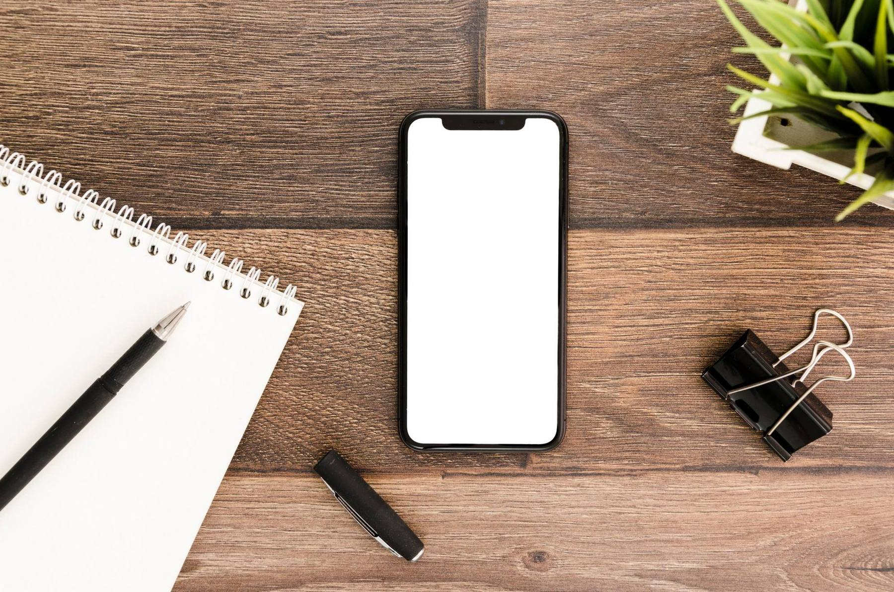

Tukar skrin
Skrin pecah atau sentuhan tak berfungsi, iPhone dan Android.

Skrin pecah, bateri cepat kong, atau phone tak boleh 'on'? Kami selesaikan masalah telefon anda dengan alat ganti berkualiti tinggi.
Kedai repair phone di Telok Panglima Garang: servis tukar skrin iPhone & Android, tukar bateri phone original, dan banyak lagi.
Skrin pecah atau sentuhan tak berfungsi, iPhone dan Android.
Bateri cepat kong? Ganti bateri original yang tahan lama.
Phone tak boleh charge atau kabel longgar.
Phone masuk air, tak boleh 'on' atau skrin bertompok.
Repair motherboard phone di Telok Panglima Garang untuk masalah device tak hidup, device tiada line atau tak detect SIM card. Termasuk masalah software.
Gambar kabur, suara tak keluar atau orang tak dengar anda.
Tanya di WhatsAppKami check dulu masalah phone anda sebelum buat apa-apa pembaikan.
Technician kami berpengalaman 5 tahun+ dalam membaiki phone.
Kami hanya repair apa yang rosak. Tiada cas tersembunyi dan tiada cadangan menukar komponen tanpa sebab yang jelas.
Setiap pembaikan (skrin & bateri) datang dengan jaminan waranti untuk ketenangan fikiran anda.
Dari mesej pertama sampai anda ambil semula device, ini langkah-langkahnya.
Beritahu model dan masalah device anda melalui WhatsApp.
Selepas kami faham masalah anda, anda boleh membawa device ke kedai untuk semakan lebih lanjut.
Technician akan menyemak keadaan device dan mengenal pasti masalah sebenar. Kami akan menerangkan masalah tersebut dengan lebih jelas kepada anda.
Sebelum kami repair, kami akan memberikan solusi terbaik dan anggaran kos. Jika anda setuju, barulah kami meneruskan repair.
Technician membaiki device anda mengikut solusi yang telah dipersetujui.
Selepas siap, anda boleh mengambil semula device dan menghubungi kami jika memerlukan bantuan lanjut.
Bergantung pada masalah dan stok alat ganti. Banyak repair seperti tukar skrin dan bateri boleh siap pada hari yang sama. Kami akan maklumkan anggaran masa selepas semakan.
Ada. Tukar bateri dan LCD datang dengan waranti 3 bulan, bergantung pada jenis spare part. Untuk repair lain, kami akan maklumkan tempoh waranti sebelum repair dimulakan.
Harga bergantung pada model phone dan kerosakan sebenar. Kami periksa phone anda dahulu, kemudian beri solusi dan anggaran kos. Repair hanya dimulakan selepas anda setuju.
Kami cadangkan WhatsApp dahulu dengan model phone dan masalahnya supaya kami boleh semak awal. Selepas itu, anda boleh bawa phone ke kedai dalam waktu operasi.
Repair biasa seperti tukar skrin, bateri atau charging port selalunya tidak melibatkan data. Untuk repair motherboard atau phone masuk air, kami akan terangkan risiko sebelum mula. Kami sentiasa cadangkan anda backup data jika boleh.
iPhone, Samsung, Oppo, Vivo, Xiaomi (Redmi & Poco), Huawei, Realme dan Honor. Hantar model phone anda melalui WhatsApp untuk semak stok alat ganti.
Matikan phone dengan segera, jangan cas, dan jangan guna hair dryer. Bawa ke kedai secepat mungkin supaya kami boleh buka dan bersihkan bahagian dalam sebelum karat terbentuk.
Lot 3745, Jalan Murai, Kampung Batu 9 Kebun Baru, 42500 Telok Panglima Garang, Selangor
| Sabtu hingga Khamis | 10:00 pagi – 9:00 malam |
| Jumaat | 10:00 pagi – 1:00 petang 3:00 petang – 9:00 malam |
Biar team FM Mobile Fix setelkan masalah phone anda hari ni juga.